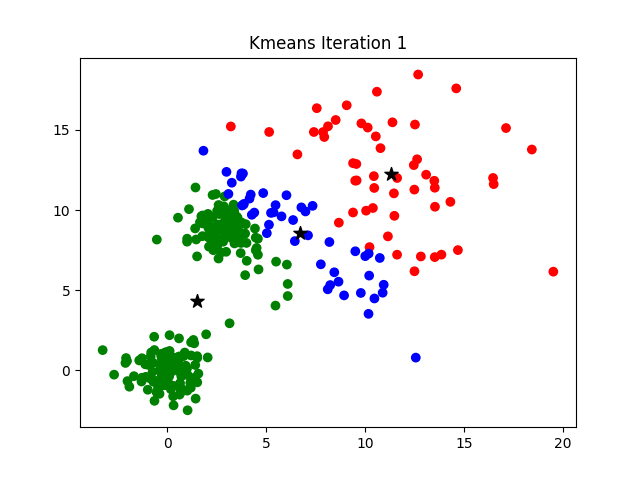

Code
import marimo as moAprendizado Nao Supervisionado
Motivação
Existem diferentes tipos de metodos e clusters algoritmos que fazem essa agragegação dos dados. Esses algoritmos possuem no fundo uma estrutura parecida baseada em unir e aproximar os dados dado a caracteristica que o compõe. Esses algoritmos ajustam a matriz dos dados tabulares, portanto caso seus dados sejam ex. dados de qualidade da água para múltiplo pontos, com diferente parâmetros de qualidade, esses tais parâmetro irão compõem a matriz de dados tabulares que os algoritmos irão utilizar para calcular essa agregação (clustering).
O clustering é um método muito útil porquê não precisa de label! Nenhum dado precisa ter uma anotação associada a ele para que o algoritmo aprenda, como é no caso do aprendizado supervisionado, os dados simplesmente usam outras técnicas por baixo dos panos para calcular essa distância de agregação.
Vamos destrinchar essas técnicas com mais calma.
Aqui, alguns dos algoritmos mais utilizados para clustering.
KMeans é o algoritmo mais popular para no processo de clustering. Seu objetivo é simples, ele tenta minimizar a variância intra-cluster, de forma que observações similares cairão sobre o mesmo cluster. E ao mesmo tempo maximizar a distância entre diferente clusters. Esse critério também é conhecido como inercia.
KMeans depende da escolha inicial do valor de K (número de cluster). E ele funciona da seguinte forma
1 - Dado um valor de K, inicialize K centróides de forma aleatória, onde os pontos mais próximos daquele centróide são atribuidos a um cluster \(c_i\). 2 - Calcula a distância entre cada ponto e o centróide desse cluster e atribui a um novo cluster se esse centróide for mais próximo do que o presente centroide. 3- Depois de reatribuir os pontos, o centróide de cada cluster é atualizado através do cálculo da média dos dados do cluster. 4 - O passo 2 e 3 é repetido até que o algoritmo tenha minimizado essa distância entre a média e o centróide.

Kmeans-Algoritmo-Visualmente-Explicado
Como o KMeans tenta minimizar a inercia, o que por si é uma médida do como internamente os cluster são coerentes, acaba sofrendo com alguns contras.
A pergunta que resta é como selecionar um número correto de K clusters, o que normalmente é atribuído pela análise de silhueta. Silhouette Analysis.
DBSCAN (Density-Based Spatial Clustering of Applications with Noise) segue uma lógica bem diferente do KMeans: ao invés de minimizar a distância até centróides, ele agrupa pontos que estão densamente conectados no espaço. A ideia central é que um cluster é uma região de alta densidade de pontos, separada de outras regiões por áreas de baixa densidade.
O algoritmo depende de dois parâmetros:
A partir disso, cada ponto é classificado em um dos três tipos:
1 - Core point: possui pelo menos min_samples vizinhos dentro do raio eps. 2 - Border point: está dentro do raio eps de um core point, mas não tem vizinhos suficientes para ser um core point. 3 - Noise point: não é core nem border, ou seja, não pertence a nenhum cluster (recebe o rótulo -1).
Diferente do KMeans, o DBSCAN não exige que definamos o número de clusters antecipadamente — ele descobre isso sozinho a partir da densidade dos dados. Além disso, ele consegue identificar clusters com formatos arbitrários (não apenas esféricos) e naturalmente separa outliers como ruído.
Visualizando o DBSCAN algoritmo
eps e min_samples não é trivial e afeta bastante o resultado. Valores errados podem juntar tudo em um único cluster ou classificar quase tudo como ruído.É justamente para resolver o problema da densidade variável que existe o HDBSCAN.
HDBSCAN (Hierarchical DBSCAN) estende o DBSCAN transformando-o em um método hierárquico, removendo a necessidade de escolher um eps fixo. Ao invés de um raio único aplicado a todo o dataset, o HDBSCAN constrói uma hierarquia de clusters variando a densidade e depois “condensa” essa hierarquia, extraindo os clusters mais estáveis ao longo dessa variação.
De forma resumida, o algoritmo:
1 - Constrói um grafo de distância baseado em uma métrica de densidade (mutual reachability distance), que reduz a distância entre pontos em regiões densas e aumenta em regiões esparsas.
2 - Constrói uma árvore geradora mínima (minimum spanning tree) sobre esse grafo.
3 - Converte essa árvore em uma hierarquia de clusters (dendrograma).
4 - “Condensa” a hierarquia, mantendo apenas as divisões de cluster que persistem por mais tempo (mais estáveis), e extrai os clusters finais dessa árvore condensada.
O principal parâmetro agora é o min_cluster_size (tamanho mínimo de um cluster), muito mais intuitivo que eps. Como resultado, o HDBSCAN lida bem com clusters de densidades diferentes e ainda mantém as vantagens do DBSCAN: não precisa de K definido a priori e identifica ruído (-1) naturalmente.
Spectral Clustering aborda o problema de agregação de uma forma completamente diferente dos algoritmos anteriores. Ao invés de trabalhar diretamente nas coordenadas originais dos dados, ele trata o problema como um problema de teoria dos grafos.
Sua lógica seria algo como:
1 - Constrói um grafo de similaridade entre os pontos (por exemplo, usando os k-vizinhos mais próximos ou uma função de kernel gaussiana), onde cada ponto é um nó e as arestas representam o quão “próximos” ou similares dois pontos são.
2 - A partir desse grafo, calcula a matriz Laplaciana.
3 - Calcula os autovetores (eigenvectors) dessa matriz Laplaciana associados aos menores autovalores (aqui já é bastante algebra linear), essa é a etapa de “redução de dimensionalidade” que dá nome ao método (espectro = conjunto de autovalores).
4 - Esses autovetores formam um novo espaço de representação dos dados, onde clusters que originalmente tinham formatos complexos e não-convexos tornam-se muito mais separáveis.
5 - Aplica um algoritmo simples, como o KMeans, nesse novo espaço para obter os clusters finais.
Por isso, assim como o KMeans, o Spectral Clustering ainda exige que definamos o número de clusters (n_clusters) a priori, a diferença é que ele consegue capturar estruturas não-convexas (espirais, luas, anéis) que o KMeans não consegue, justamente por operar sobre a similaridade entre pontos e não sobre a distância direta ao centróide. Em compensação, é computacionalmente mais custoso, pois depende da decomposição espectral de uma matriz que cresce com o número de amostras.
Hierarchical Clustering (Clustering Hierárquico) constrói uma hierarquia de clusters ao invés de uma partição única dos dados. A variante mais comum é a aglomerativa (bottom-up):
1 - Cada ponto começa como seu próprio cluster.
2 - A cada passo, os dois clusters mais “próximos” são unidos em um único cluster.
3 - O passo 2 se repete até que reste apenas um único cluster contendo todos os pontos.
O resultado desse processo é um dendrograma: uma árvore que registra a ordem e a distância em que os clusters foram unidos. A grande vantagem é que não precisamos decidir o número de clusters antes de rodar o algoritmo. Primeiro construímos a hierarquia e decidimos depois, “cortando” o dendrograma na altura desejada, quantos clusters queremos extrair.
A forma como medimos a distância entre dois clusters (não apenas entre dois pontos) é chamada de linkage, e existem algumas escolhas comuns:
Olhando o dendrograma, podemos escolher onde “cortar” a árvore (uma linha horizontal). Quanto mais baixo o corte, mais clusters obtemos; quanto mais alto, menos clusters (e mais heterogêneos). Na prática, usamos o AgglomerativeClustering do scikit-learn passando diretamente o número de clusters desejado, que internamente faz esse corte por nós.
eps no DBSCAN).Lá no início lançamos o exemplo de dados de qualidade da água coletados em múltiplos pontos, agora vamos construir esse caso de uso de verdade, unindo clustering com dados geoespaciais.
Cenário: uma rede de estações de monitoramento de qualidade da água espalhadas por uma bacia hidrográfica. Cada estação possui uma localização (lat, lon) e medições de parâmetros de qualidade, como turbidez e oxigênio dissolvido. Algumas estações estão fisicamente próximas porque monitoram o mesmo trecho do rio ou a mesma sub-bacia, já outras estão isoladas.
A pergunta que queremos responder com clustering é se as estações que estão geograficamente próximas também apresentam qualidade da água parecida? Ou existem sub-regiões, dentro de uma mesma área geográfica, que se comportam de forma muito diferente (por exemplo, por causa de uma fonte de poluição pontual)?
Vamos comparar duas abordagens:
1 - Clustering usando apenas coordenadas geográficas (lat/lon), agrupa estações puramente pela proximidade espacial. 2 - Clustering usando coordenadas + parâmetros de qualidade da água (padronizados), agrupa estações que são parecidas tanto no espaço quanto na qualidade da água medida.
Isso mostra na prática por que a escolha de quais features entram na matriz de dados muda completamente o resultado do clustering, mesmo usando o mesmo algoritmo.
Nota: para simplificar, tratamos
lat/loncom distância euclidiana. Numa aplicação real, para áreas geográficas maiores, o ideal é usar uma métrica de distância adequada (ex. haversine) ou projetar as coordenadas para um CRS métrico antes de calcular distâncias. Assunto que já vimos no módulo de fundamentos em GIS e RS.
_rng = np.random.default_rng(42)
_cluster_centers = [
(-15.72, -47.93), # zona 1 - alto curso
(-15.79, -47.88), # zona 2 - trecho urbano
(-15.74, -47.80), # zona 3 - trecho rural
]
_turbidity_means = [8, 45, 12]
_oxygen_means = [8.5, 4.0, 7.8]
_rows = []
for _zone, ((_lat_c, _lon_c), _turb_m, _ox_m) in enumerate(
zip(_cluster_centers, _turbidity_means, _oxygen_means)
):
for _ in range(15):
_rows.append({
"lat": _lat_c + _rng.normal(0, 0.006),
"lon": _lon_c + _rng.normal(0, 0.006),
"turbidity": max(0, _rng.normal(_turb_m, 3)),
"oxygen": max(0, _rng.normal(_ox_m, 0.6)),
"zone": f"zona_{_zone + 1}",
})
# estações isoladas / anômalas (ex. sensor com defeito ou foco pontual de poluição)
for _ in range(5):
_rows.append({
"lat": _rng.uniform(-15.82, -15.70),
"lon": _rng.uniform(-47.97, -47.76),
"turbidity": _rng.random(60, 90),
"oxygen": _rng.random(1.5, 3.0),
"zone": "anomalia",
})
stations = pd.DataFrame(_rows)
stations["station_id"] = [f"st_{_i:02d}" for _i in range(len(stations))]Aqui usamos o HDBSCAN considerando somente lat e lon.
Agora adicionamos turbidez e oxigenio dissolvido à matriz de dados. Como essas variáveis estão em escalas bem diferentes de lat/lon (e entre si), precisamos padronizar (StandardScaler) antes de calcular distâncias.
Vamos começar a tratar bastante essa idéia de padronização daqui para frente, pois ela é extremamente necessária para que nossos algoritmos de ML convergir. Senão padronizarmos, a variável com maior magnitude domina o cálculo.